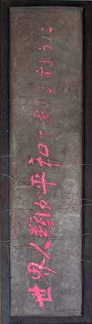
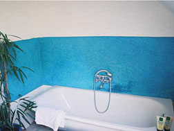
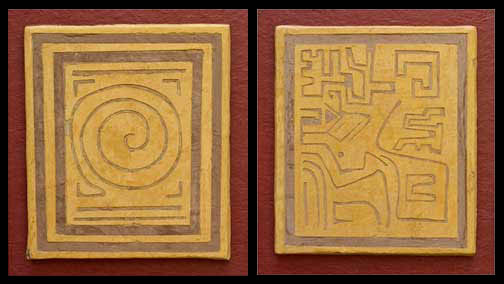
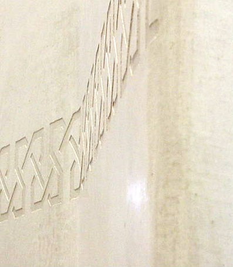
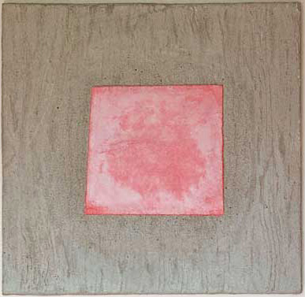
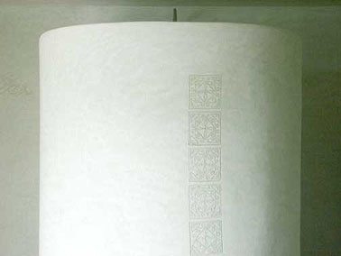
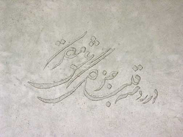
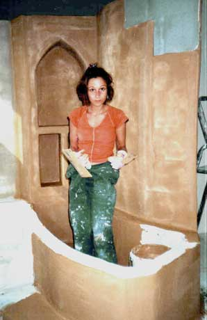

|
|
Navig.
page/section


_____
|
|
Pages soeurs
I, A propos des liants
II, Bulles, siccativ., struct. élec.
III, Caséine, phosphore, dissociation
IV, Les orbitales
V, L'aérogel
VI, Polarisation de la lumière
VII, Sfumato et diffusion Rayleigh
VIII, Les interférentielles
IX, Dextrine, farine et chiralité
X, L'ocre bleue
XI, Les métamatériaux
XII, Le jaunissement
XIII, Laser etc.
XIV, L'holographie
XV, L'holographie numérique
XVI, Extérieur, intérieur, chaux
XVII, L'électrolyse et les ions
XVIII, L'électricité, un peu plus loin
XIX, Oxydation, métaux
XX, Les échelles
XXI, Nature et évolution des résines
XXII, Le mouillage pigmentaire
XXIII, La molette
XXIV, Blanche neige
XXV, Lumière et matière
XXVI, Magnétisme
XXVII, Ambre et vieilles branches
XXVIII, L'origami miroir
XXIX, Le feu
XXX, Peau du métal
XXXI, La ville en un souffle
XXXII, Oxyder des matériaux
XXXIII, Ocre bleue, une solution
_____
|
Copyright © www.dotapea.com
Tous droits réservés.
Précisions cliquer ici
|
|
| |
|
|
Les dialogues sur la physique-chimie
appliquée aux arts
Chapitre
XVI
Extérieur, intérieur, chaux
Le tadelakt et d'autres techniques aux
applications multiples
|
 |
dial dial
dial
|
Une distribution un peu particulière pour ce chapitre des
Dialogues de Dotapea : Clothilde Bernair,
professionnelle rompue aux techniques de la chaux (voir le site Sable
Rouge), Jean-Louis, physico-chimiste au CNRS
(intervention unique en bleu clair)
et Emmanuel, candide.
Les questions des lecteurs de Dotapea portent assez souvent sur le sujet de la
peinture à l'extérieur, parfois dans des environnements extrêmes.
Nous essayons ici de fournir quelques réponses.
A
lire en complément :
intervention in
Courrier des Lecteurs
|
|
Emmanuel : La question est souvent posée
par les lecteurs de Dotapea : quelle peinture utiliser à l'extérieur
dans des domaines artistiques ou décoratifs ?
Il existe plusieurs procédés. Certains sont solides, trop peut-être pour
certaines applications. Un peu à l'opposé, les procédés à la chaux ont
fait leurs preuves depuis des milliers d'années et autorisent des
réalisation variées comme nous allons le voir au long de cet article.
Ces images disséminées permettent de se rendre compte des possibilités
de travailler non seulement en couleur, mais aussi, largement, en
épaisseur.
Au-delà du fait fascinant de réaliser une peinture qui deviendra à terme
rien moins que de la pierre (lire passage
in La chaux), les applications en art contemporain - et pas seulement en arts
décoratifs - paraissent aller de soi. La plupart des dimensions, des
styles et des emplacements (intérieur, extérieur) sont envisageables.

Clothilde Bernair ©
Tout particulièrement, on parle de plus en plus du tadelakt pour des atmosphères particulièrement humides telles que les
salles d'eau.

Clothilde Bernair ©
Mais pensez-vous que l'on peut vraiment déplacer cette technique à l'extérieur ?
|
|
|
|
Clothilde : Le tadelakt en extérieur ça me paraît tout à fait possible,
surtout qu'il existe des produits hydrofuges laissant respirer la pierre
ou les pierres reconstituées.
Emmanuel : Concrètement, tout
ciment à base de
chaux hydraulique devrait
convenir, non ?
Clothilde : Oui, ça convient.
Emmanuel : Personnellement j'essayerais de travailler
à fresque dans du
ciment blanc. Est-ce que cela vous paraît viable ?
Clothilde : Ca me parait un peu difficile à
cause de la rapidité de séchage, mais pourquoi pas essayer. Je le ferais
plutôt à base de chaux.
Emmanuel : D'accord. |
|
Tadelakt, ciment blanc, chaux : que choisir ? |
|
Est-ce que l'on peut passer le galet sur une fresque ?
Clothilde : Oui, comme sur n'importe quel
enduit de chaux d'ailleurs, le seul ennui c'est que
cela risque d'emporter une partie de la peinture et faire des taches floues.
Pour des faux marbres, ça ne pose pas de
problèmes, mais une peinture bien précise, c'est un peu triste.
Emmanuel : Si l'on ne passe pas le galet, l'eau
entre trop,
c'est ça ?
Clothilde : Le galet permet de bien étirer la chaux, de la ferrer, et de
faire effectivement une barrière étanche.
|
|
Le
galet, outil du tadelakt : son rôle et ses limites |

Clothilde Bernair ©
|
|
Emmanuel : Que pensez-vous de l'adjonction
d'agents (chimiques ou autres) dans la chaux pour en améliorer les
performances (d'adhérence, cohésion,.) ?
Clothilde : Je fais le tadelakt façon
traditionnelle, puis il est toujours possible de le protéger avec des produits hydrofuges
invisibles.
Il faut faire attention à tous ces adjuvants que l'on a
tendance à mettre dans la chaux, il ne faut pas oublier que si la chaux
redevient pierre, c'est par le biais d'une réaction chimique. Les
adjuvants peuvent la bloquer. La perméabilité à la vapeur d'eau n'est
pas souhaitable. Il faudrait les
conseils d'un chimiste car je ne m'y connais pas assez à ce niveau-là.
Ou relire Vitruve. C'est parfois juste une question de quantité.
Emmanuel : J'avais entendu parler de cires pour la finition
mais je vois mal ça à l'extérieur. En fait, les corps gras ne me
semblent pas forcément adaptés mais j'ai peut-être tort.
Clothilde : Les corps gras cela peut aller, mais il faut y aller
prudemment, attendre que la carbonatation ait eu lieu, et prendre un
produit incolore. Éventuellement le diluer pour plus de précaution. Le
danger est qu'il peut laisser des marques grasses s'il n'est pas absorbé
régulièrement ou appliqué de manière uniforme. En ce qui concerne la
cire, l'application doit aussi effectuée à intervalles réguliers sinon elle
finit par s'en aller.

Clothilde Bernair ©
|
|
Additifs et finitions |
|
Emmanuel :
A vue de nez, vous comptez combien de temps de carbonatation
?
Clothilde : On compte grosso modo un bon mois mais cela dépend de
l'épaisseur, de l'hydraulicité de la chaux, du taux d'humidité et de
l'aération du lieu. Cela dépend de l'absorption du support aussi. Dans
des maçonneries de l'époque romaine, certaines chaux n'ont toujours pas
vu leur carbonatation, par manque d'air.
|
|
Le
temps crucial de la carbonatation |
|
Emmanuel :
L'une des personnes qui ont posé des questions sur Dotapea me
demandait si on peut utiliser à un moment donné de la caséine.
Évidemment, caséine+chaux ça fait plutôt bon ménage et les qualités
plastiques sont intéressantes. Mais pour l'extérieur... Qu'est-ce que
vous en dites ?
Clothilde : Eh bien moi, je ne suis pas trop pour la caséine avec la
chaux, plutôt la chaux toute seule ou la caséine toute seule.
Emmanuel : Tiens ? Peut-être à cause de l'aspect pictural
ou plastique ? La
caséine pure est transparente, pas la chaux hydraulique. J'ai fait des
essais caséine+chaux aérienne qui étaient intéressants plastiquement
mais à mon avis insuffisants pour l'extérieur en termes de solidité.
Ceci dit je n'ai pas vérifié ça.
Clothilde : La caséine n'a pas besoin de chaux pour tenir, c'est un
genre de colle à elle toute seule. La caséine dans la chaux, il faut
faire attention à la proportion, un petit peu pour maintenir une
certaine cohésion, mais pas trop pour ne pas bloquer la perméabilité à
la vapeur d'eau et la carbonatation.
Encore une fois, les conseils d'un chimiste seraient nécessaires.
Pour l'extérieur une chaux hydraulique naturelle est bien suffisante je
pense. Sinon il faudrait peut-être essayer la caséine toute seule en
extérieur, elle est plus "imperméable".
Concernant d'autres peintures, je ne sais pas trop. Je crois
que je ne m'y connais pas assez de ce côté-là. La peinture à l'huile de
lin et à la térébenthine me paraît une solution possible, mais à vrai
dire je ne sais pas comment elle réagirait aux intempéries et dans le
temps...
Emmanuel : Sur le métal ça tient
plutôt bien (cf. la Tour Eiffel). C'est assez étrange parce que sur support
poreux on est loin d'obtenir des résultats aussi performants.
Clothilde : En mettant un bon enduit préparatoire avant de peindre,
pourquoi pas ?
Emmanuel : Le problème avec les supports
poreux est l'évacuation de l'eau qu'ils contiennent. Par exemple avec un
mur humide ça bloque et ça cloque. Avec un mur de
granite ou de basalte ça doit marcher. Avec des calcaires, pas sûr.
Clothilde : Quel que soit ce que l'on met sur un mur, un support humide
est complètement déconseillé, à moins que cela soit des produits
spécifiques à ce genre de problème. Il faut régler le problème avant de
faire quoi que ce soit.

Clothilde Bernair ©
|
|
Chaux et caséine : toujours la question de la carbonatation |
|
Emmanuel :
En principe on peut couler un ciment ou un
béton à la chaux
hydraulique carrément sous l'eau. Mais là il s'agit d'enduire ou de
peindre, enfin de faire adhérer à une surface. Donc est-ce que dans ce
cas-là - je dis bien celui-la et pas un autre - c'est l'adhérence qui
pose problème ? Le ciment colle mal s'il y a trop d'eau ?
Clothilde : Je ne suis pas très sûre,
le ciment moderne n'est pas ma spécialité. Toujours est-il que pour le
tadelakt, l'apposer sur des surfaces humides empêche le séchage et la
prise de la
chaux et donc le travail de lissage. La chaux doit "prendre", sécher un
peu, et cela est possible entre autres par l'absorption par le support
de l'eau contenue dans la chaux. Si le support est humide (saturé
d'eau), il ne peut absorber l'eau contenue dans la chaux. Celle-ci ne
peut donc sécher ni adhérer, ni commencer sa carbonatation.
Emmanuel : Qu'est-ce qui empêche un enduit ou une peinture à
la chaux hydraulique d'adhérer sur un support en milieu humide ou aqueux
alors que ça marche dans un milieu aérien moyen ? A ton avis
Jean-Louis...
Jean-Louis :
Pour que la chaux prenne, il faut de l'eau et du CO2.
Dans
le cas de la chaux dite "aérienne", les deux pourraient littéralement
venir "de l'air", sous-entendu "ambiant". En pratique, pour mettre en
oeuvre physiquement la chaux, on ajoute de l'eau lorsqu'on prépare le
mortier ou l'enduit, pour faire une pâte. Ensuite cette pâte durcit.
Si
c'est une chaux hydraulique elle durcit rapidement (comme un ciment) à
cause des argiles, elle ne se carbonate qu'ensuite, plus lentement,
comme la chaux "aérienne" qui ne durcit que par carbonatation.
La chaux est quasiment insoluble dans l'eau. Donc on prépare une
suspension. On comprend que la quantité d'eau est critique, si on en met
trop les grains de chaux ne peuvent plus être en contact suffisamment
intime pour se lier les uns aux autres. C'est aussi se qui se passe si
le support est trop humide, la couche de chaux est isolée du support par
un film d'eau qui l'empêche d'y adhérer.

Clothilde Bernair ©
|
|
Sous
l'eau, dans l'eau, avec l'eau, comment ça colle ? |
|
Clothilde : Il faut aussi voir la réaction des pigments à la lumière et
aux conditions climatiques...
Emmanuel : Oui. Justement, l'une des
personnes qui ont posé ces questions sur la peinture à l'extérieur voulait une résistance de
-25 à +35° (en montagne) et là à mon avis, il n'y a qu'un bon vieux
dérivé de chaux qui ait une chance, et encore. Même une pierre peut se
fendre.
Clothilde : Clair ! La
difficulté avec la chaux, c'est qu'il faut
des conditions d'application stricte, avant la carbonatation (+5 à +30
ou 35°, pas de vent, pas de soleil trop fort, pas de pluie,...). Après
c'est plus résistant et aussi plus élastique. Peut-être en la mélangeant à du plâtre
bien que celui-ci ne soit pas résistant à l'eau ? |
|
Les
conditions climatiques |
|
***
A propos de ce que l'on lit
ici ou là sur le tadelakt,
quelques réactions de Clothilde Bernair
Sur la base d'arguments commerciaux et
d'indications diverses trouvés sur le web francophone (il s'agit de
citations), Clothilde (qui réagit en
violet) nous
apporte un intéressant éclairage critique tantôt positif, tantôt
négatif.
"Le nom de Tadelakt provient du verbe 'dellek' qui signifie pétrir,
comprimer."
D'après ce que je sais, ce serait plutôt
« caresser, masser ». Cela me paraît important car cela évoque
tout l'amour, la patience et l'attention que l'on doit accorder au
tadelakt pendant sa réalisation.
"[La chaux qui est obtenue sur place, à Marrakech, par calcination]
est simplement calcinée, puis éteinte. Utilisée telle quelle sans aucun
ajout, simplement tamisée, et teintée avec des pigments résistants à la
chaux, elle permet d'obtenir un enduit qui possède la même densité que
le béton utilisé en Europe dans les stations d'épuration. Les analyses
effectuées en laboratoire ont montré qu'il s'agit d'une chaux fortement
hydraulique."
Elle est naturellement argileuse mais pas si
hydraulique que cela puisqu'elle ne sèche pas dans l'eau, seulement au
contact de l'air, ou alors très très lentement.
[Outils]
"L'outil le plus important pour cette technique reste la pierre, un galet
qui présente une face plate avec des bords arrondis (...) la
taloche
[en bois] pour le serrage
[pour appliquer la chaux] ou de
simples petites planches rectangulaires confectionnées par les artisans,
pour la finition une spatule faite avec du plastique de récupération.
(...) A Marrakech, le
Tadelakt s'applique à la truelle [truelle et
taloche] en une couche, il est ensuite taloché,
avant d'être serré au galet, puis à la spatule de plastique."
Le serrage au galet permet de
faire remonter le lait de chaux et de l'étirer pour faire une barrière
résistante à l'eau. La difficulté est de sentir le bon moment pour le
faire, et d'avoir les conditions « climatiques » appropriées.
Il
faut aussi savoir l'appliquer sur le support de manière suffisamment
régulière, à la fois dense sans trop revenir dessus.
[Supports]
"A la place des panneaux de plâtre (placoplâtre ou fermacell), nous
recommandons les panneaux de fibres de bois liées au ciment de magnésie
(héraclith)."
Tout à fait d'accord

Clothilde Bernair ©
[Au sujet d'un produit commercial spécifique
pris comme exemple]
"Nous avons [...] mis au point, avec les matières premières dont nous
disposons ici, un produit qui présente les mêmes qualités que la chaux
de Marrakech."
[le rendement annoncé est "environ 2,5 kg par m2"]
|
|
|
|
Vu cette quantité, il s'agit plutôt d'un
enduit décoratif de finition (presque une peinture) qui va donner un
autre résultat que le tadelakt de Marrakech. Celui-ci est un véritable
plafonnage traditionnel qui demande deux à
trois fois plus de matière (en poids).
L'idée maîtresse du tadelakt, c'est l'épaisseur, la solidité, la
profondeur.
"Mortier en poudre à mélanger à l'eau, couleur blanche"
Bizarre, une chaux hydraulique naturelle est
généralement teintée. Elle doit être très très proche du ciment blanc
alors. Je doute que cela soit de la chaux hydraulique naturelle, ce
qu'ils utilisent.
"Composition :
Chaux hydraulique naturelle, sables de quartz, poudres de marbres,
argiles, cendres, diatomées, cellulose."
Il n'est pas bon de mélanger l'argile à la
chaux, sauf cuite. Par contre le quartz donne une grande solidité à
l'enduit. La cellulose je crois que c'est un retardateur de prise, je ne
suis pas convaincue du mélange avec la chaux et cela n'est pas
nécessaire sous nos climats, en tout cas avec la chaux de Marrakech.
Bien sûr dans une chaux hydraulique cela pourrait être nécessaire. Les
conseils d'un chimiste seraient les bienvenus mais les décorateurs
européens ont un peu trop tendance à mettre des adjuvants synthétiques,
colles etc. qui peuvent empêcher la carbonatation et empêcher que les
murs respirent.
"Le Tadelakt préparé est à utiliser dans les 10 heures qui suivent."
A cause de la chaux hydraulique, qui sèche dans l'eau. La chaux de
Marrakech est quant à elle trempée pendant un mois minimum, donc son
hydraulicité est moindre.
"On peut aussi
appliquer le Tadelakt sur d'autres supports qui conviennent moins -
plaques de plâtre, plâtre-cellulose, enduit au plâtre, terre cuite, à
condition de les recouvrir auparavant d'une sous-couche à base de colle
à carrelage."
C'est vrai qu'il y a moyen de
"chipoter" et d'appliquer le tadelakt sur d'autres supports, moyennant
quelques préparations, mais ce n'est pas idéal. Pas d'accord pour la
colle à carrelage, cela bloque le
fond. Poser un enduit par-dessus
s'impose. Il pourra absorber l'eau de
la chaux. Les fonds bloqués limitent grandement l'absorption et donc la
carbonatation naturelle.
"On passe le savon
à lisser (utilisé pour le Stucco lustro) avec un pinceau jusqu'à
saturation. On laisse tirer un peu, avant de polir avec le galet. On
obtient ainsi un brillant plus soutenu ainsi qu'une meilleure résistance
à l'eau et à la saleté : c'est la réaction chimique du savon avec la
chaux du support qui donne cette qualité hydrofuge"
Je ne pense pas que cela soit une
réaction chimique, le savon est gras et s'imbibe dans la chaux pour
former une barrière résistante à l'eau.
"Pour l'entretien,
utiliser une éponge trempée dans de l'eau tiède savonneuse. Ne pas
utiliser d'abrasifs ni de détergents."
Je
dirais surtout, ne pas appliquer de produits anti-calcaires sur le
tadelakt.
Le tadelakt est résistant une fois sa carbonatation réalisée et ne
craint pas tant que ça les nettoyages, même énergiques. Seuls les
produits anti-calcaires, gras ou colorés sont à éviter.

Clothilde Bernair ©
|
|
Le
tadelakt est un plafonnage (une enduction, un stucage). |
|
Chapitre suivant |
Retour
début de page
|
|

 Communication
Communication
|
|